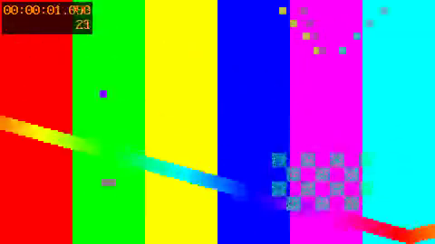

動画・音声・GIF
動画（再生バーと poster。title をキャプションにする）
幅と autoplay・loop（{width=320 autoplay loop}。muted を追加する）
キャプションの無い動画（title を記載しない）
音声（再生バーと title のキャプション）
読み上げの見本です。
GIF（再生している。右上のボタンで止める）
GIF を止めた（動きを減らす設定のときもこの状態で始める）
読み込めない属性を記載した（{width=big loop}。異常シナリオ）
記載の警告
width=big は読み込めません。幅は 320（px）か 50% のように記載してください。ほかの属性（loop）は適用しています。
表のセルの中の動画と音声 — 案 A: ラベルの文字と再生のアイコンのボタン（推奨）
| No | 素材 | 説明 |
|---|---|---|
| 1 | 解説の画面収録 | |
| 2 | 操作の画面 | 記事のスクリーンショットから作った動画 |
| 3 | 読み上げの見本 | |
| 4 | 長いラベル |
表のセルの中の動画 — 案 B: poster のサムネイルに再生のアイコンを重ねる
| No | 素材 | 説明 |
|---|---|---|
| 1 | poster を持つ動画 | |
| 2 | 操作の画面 | poster の無い動画（最初のフレームを読み込むまで面の色） |
| 3 | 音声はサムネイルを持たないため案 A と同じボタン |
modal の属性（{modal} と文の途中の {modal}。案 A）
保存までの操作
手順は で確認する。
再生のダイアログ — 動画（開いた見本。上のボタンを押すと同じダイアログが開く）
素材 2
操作の画面
再生のダイアログ — 音声（開いた見本）
読み上げ
読み上げの見本